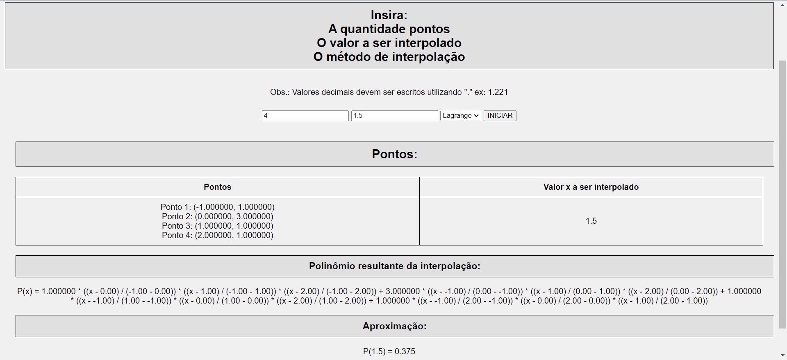
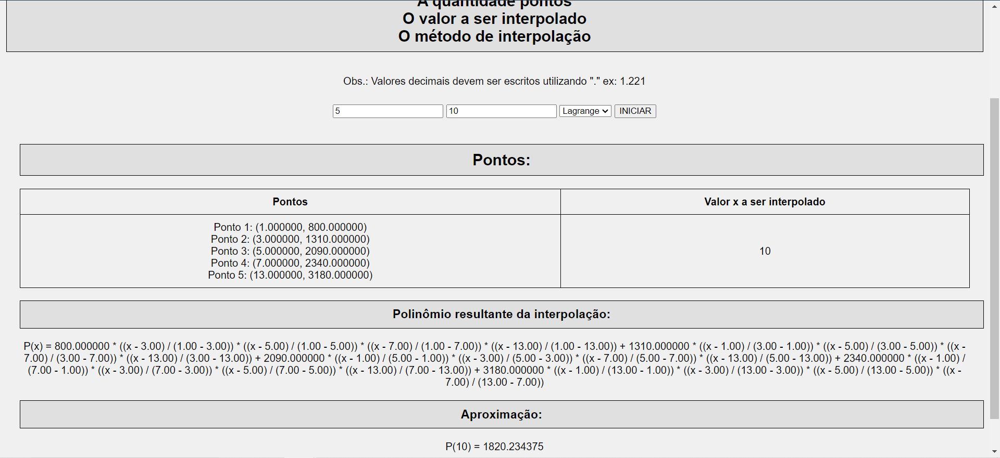
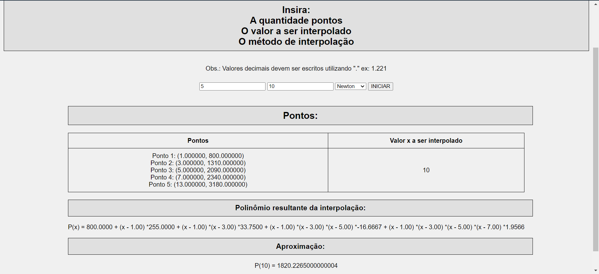
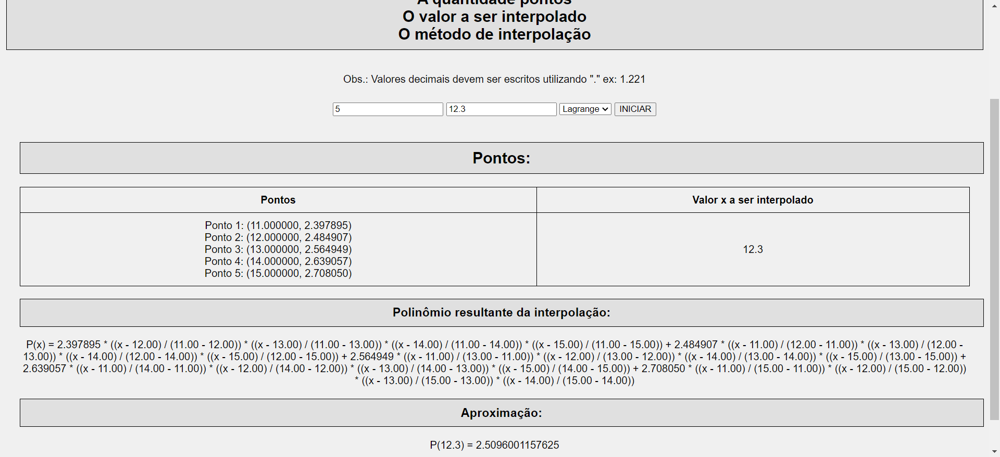

No seguinte post será resolvido 3 exercícios de interpolação onde serã usados os algorítmos que executam o método de Newton e de Lagrange.
Conteúdos adicionais:
| x | f(x) |
|---|---|
| -1 | 1 |
| 0 | 3 |
| 1 | 1 |
| 2 | 1 |

Polinômio por Lagrange P(1.5) = 0.375
P(x) = 1.000000 * ((x - 0.00) / (-1.00 - 0.00)) * ((x - 1.00) / (-1.00 - 1.00)) * ((x - 2.00) / (-1.00 - 2.00)) + 3.000000 * ((x - -1.00) / (0.00 - -1.00)) * ((x - 1.00) / (0.00 - 1.00)) * ((x - 2.00) / (0.00 - 2.00)) + 1.000000 * ((x - -1.00) / (1.00 - -1.00)) * ((x - 0.00) / (1.00 - 0.00)) * ((x - 2.00) / (1.00 - 2.00)) + 1.000000 * ((x - -1.00) / (2.00 - -1.00)) * ((x - 0.00) / (2.00 - 0.00)) * ((x - 1.00) / (2.00 - 1.00))
Polinômio por Newton P(1.5) = 0.375
P(x) = 1.0000 + (x - -1.00) *2.0000 + (x - -1.00) *(x - 0.00) *-2.0000 + (x - -1.00) *(x - 0.00) *(x - 1.00) *1.0000
| Tempo(s) | Vel(cm/s) |
|---|---|
| 1 | 800 |
| 3 | 1310 |
| 5 | 2090 |
| 7 | 2340 |
| 13 | 3180 |


| Método | P(10) |
|---|---|
| Lagrange | 1820.234375 |
| Newton | 1820.2265000000004 |
Como não estava entendendo os resultados pois eles estavam se apresentando muito fora da curva, resolvi aplicar os pontos no método dos mínimos quadrados (regressão linear) e aplicar o valor 10s na reta.
ui = 813.8208 + 194.8585x
ui = 2762.4058 cm/s
| x | f(x) |
|---|---|
| 11 | 2.397895 |
| 12 | 2.484907 |
| 13 | 2.564949 |
| 14 | 2.639057 |
| 15 | 2.708050 |

| Método | P(12.3) | Erro* |
|---|---|---|
| Lagrange | 2.5096001157625 | -0.0000008533841281887559828447244 |
| Newton | 2,5095804000000004 | 0,0000188623783714112440171552756 |
*Comparando com o resultado da calculadora científica
[ln(12.3) = 2,5095992623783718112440171552756]
[Erro(x) = f(x) - P(x)]